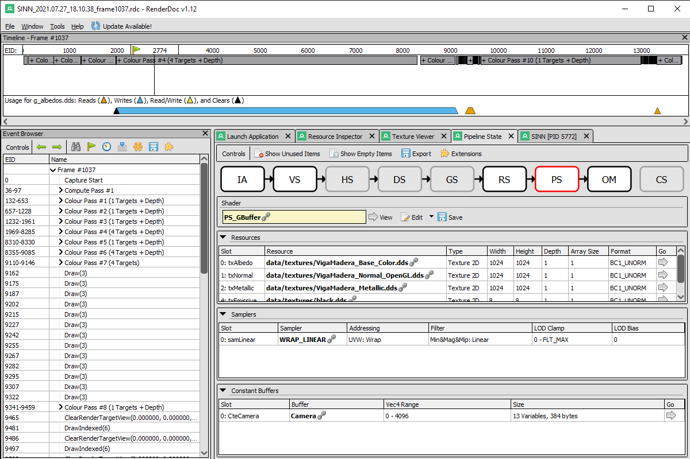

 Due to my involvement with the shaders on the project, I ended up supervising and modifying the rendering pipeline when needed.
In the project we used HLSL and the deferred renderer technique. Furthermore, we used RenderDoc to debug all the GPU code and check it's order of execution and data associated with it.
We also had drawing groups, to render the objects by categories and apply certain techniques, such as decals, only to certain groups.